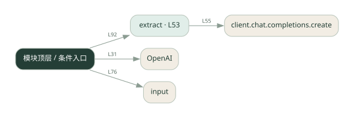

1-17 · 全课程第 17 节
对话状态机
dialogue_fsm.py
源码快照 14e59e1fc1cb · 静态解析 · 2026-09-10
01 / 要完成的事
根据当前状态收集信息，并在条件满足后转到下一步。
02 / 为什么要做
自由对话容易跳过必要字段；状态把流程约束显式化。
03 / 当前代码状态
存在外部服务或模型依赖；执行前需按源文件配置依赖和凭据，可能联网或产生 API 费用。 本次只做静态解析，没有运行练习，也没有替你填写或修改原代码。
04 / 调用图
打开大图 ↗实线：源码中的直接调用；虚线：函数引用/注册、动态调用或按方法名推断的候选。L 是调用所在源码行号。箭头不表示执行顺序或每次必经；分支、循环、异步调度及框架内部调用需结合源码。灰色是外部/未解析目标，橙色是动态分发；省略 print、len 和常规容器操作以减少干扰。孤立函数可能尚未接入。

先从 模块入口 出发，沿箭头找到本文件函数，再查看外部调用或动态分发。右侧调用清单保留所有静态调用点，能回到原文件逐行对照。
05 / 函数定位
| 函数 / 定义行 | 职责（源码注释） | 内部调用 |
|---|---|---|
extractL53 | 用 LLM 从用户输入里提取当前状态需要的信息 | client.chat.completions.create, resp.choices[动态键].message.content.strip |
这样做的优点
每一阶段的必填信息和出口容易检查。
代价与局限
状态和分支变多后维护成本上升；模型抽取失败需要回退路径。
适用场景
预约、下单前的信息收集。
不宜直接照搬
完全开放、无法定义阶段的自由聊天。
动手检验理解
在收集第二个字段时修改第一个字段，观察状态是否正确更新。
有未实现位置时先预测，再补齐验证。能启动不等于逻辑正确。
查看全部 19 个静态调用 / 引用点
| 调用方 | 目标 | 源码行 | 类型 |
|---|---|---|---|
| <模块入口> | OpenAI | 31 | 调用 |
| extract | client.chat.completions.create | 55 | 调用 |
| extract | resp.choices[动态键].message.content.strip | 63 | 调用 |
| <模块入口> | print | 69 | 调用 |
| <模块入口> | print | 70 | 调用 |
| <模块入口> | print | 71 | 调用 |
| <模块入口> | print | 75 | 调用 |
| <模块入口> | input().strip | 76 | 调用 |
| <模块入口> | input | 76 | 调用 |
| <模块入口> | user.lower | 77 | 调用 |
| <模块入口> | print | 78 | 调用 |
| <模块入口> | print | 88 | 调用 |
| <模块入口> | extract | 92 | 调用 |
| <模块入口> | print | 94 | 调用 |
| <模块入口> | print | 99 | 调用 |
| <模块入口> | print | 100 | 调用 |
| <模块入口> | order.items | 101 | 调用 |
| <模块入口> | print | 102 | 调用 |
| <模块入口> | print | 103 | 调用 |